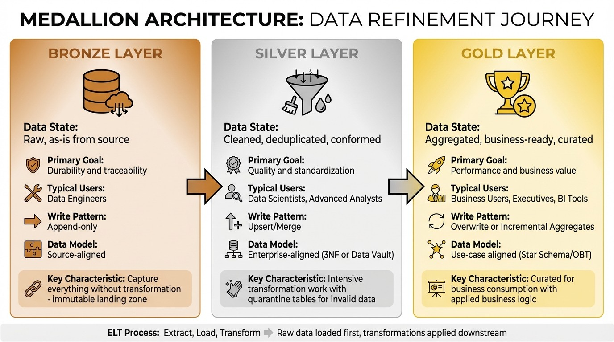

Data Strategy
Ultimate Guide to Data Lakehouse Design
A data lakehouse combines the strengths of data lakes and data warehouses, offering flexible storage, high performance, and cost efficiency. It eliminates the complexity of managing separate systems by integrating features like ACID transactions, schema enforcement, and real-time analytics. With a layered approach - Bronze for raw data, Silver for cleaned data, and Gold for business-ready insights - it ensures data quality and accessibility.
Key takeaways:
Cost savings: Lakehouse storage costs $30–$50 per terabyte annually, compared to $500–$2,000 for warehouses.
Real-time analytics: No need for complex ETL pipelines; data is ready for immediate use.
Scalability: Compute and storage are independent, allowing you to scale resources as needed.
Data trust: Organized layers and clear ownership ensure reliable, actionable data.
This guide explains how to design, implement, and optimize a lakehouse while addressing governance, security, and performance. By unifying your data infrastructure, you can simplify operations, reduce costs, and support advanced analytics.
[01] Data Lakehouse | End-to-End Guide to Building a Data Lakehouse (Open-Source Edition)
Core Principles of Data Lakehouse Architecture
Building a successful lakehouse hinges on a few guiding principles that ensure it’s scalable, cost-efficient, and aligned with business needs. These principles help organize data, manage resources effectively, and create an environment where teams can trust the data they’re working with. Let’s dive into these core ideas, starting with how treating data as a product fosters trust and accountability.
Treating Data as Products
In a well-designed lakehouse, data is treated like a product. This means assigning clear ownership, defining schemas upfront, and setting quality standards to ensure the data is reliable. When someone owns the data, they’re responsible for its accuracy, timeliness, and usability. This approach aligns closely with concepts like the "Data Mesh" or the "Meshdallion" pattern, where departments manage their own data products instead of relying solely on a central IT team.
"Curating data is essential to creating a high-value data lake for BI and ML/AI. Treat data like a product with a clear definition, schema, and lifecycle." – Databricks
The result? Business users can trust the data outputs. For instance, if the Finance team owns a specific data product and regularly validates it, users can rely on metrics like customer revenue being accurate. This trust is reinforced through Data Contracts, which formally outline schemas, quality checks, and service-level agreements between the data producers and consumers.
Layered Architecture Design
A lakehouse thrives on a layered structure, typically organized into Bronze, Silver, and Gold layers. Each layer serves a specific purpose, ensuring a smooth flow from raw data to actionable insights.
Bronze Layer: Stores raw data exactly as it arrives, maintaining a complete history for potential reprocessing.
Silver Layer: Cleans and standardizes the data, applying validation and deduplication to create a more reliable foundation.
Gold Layer: Prepares business-ready datasets, often aggregated, anonymized, or tailored for specific use cases.
This layered design not only improves data quality over time but also simplifies governance and operations. Knowing where data resides and its current state allows for better security measures and performance tuning at each stage.
Balancing Scalability and Cost
One of the standout features of a lakehouse is the separation of storage and compute. This decoupling allows you to scale processing power independently of storage needs. For example, you can temporarily increase compute resources during high-demand periods - like quarterly reporting or machine learning model training - and scale them back down afterward, paying only for what you use.
To keep costs in check, implement intelligent storage tiering:
Use hot storage for frequently accessed data to ensure fast query performance.
Move older, less-accessed data to standard object storage.
Archive historical data that’s rarely needed.
This approach can reduce storage expenses by 40–60% without compromising performance for active tasks. Additionally, automated compaction jobs can merge small files into optimized Parquet files, solving the "small file problem" that often slows down queries and increases metadata costs.
The Medallion Architecture Framework

Data Lakehouse Medallion Architecture: Bronze, Silver, and Gold Layers Comparison
The Medallion Architecture organizes data into Bronze, Silver, and Gold layers, refining it step by step to ensure it becomes more usable and reliable at each stage. This approach, popularized by Databricks around 2019–2020 alongside Delta Lake, provides a clear path from raw data to actionable insights.
"Medallion isn't about the name - it's about the principle: don't lose raw data, improve quality progressively, and serve the right abstraction to the right consumer."
– datadef.io
At its core, the framework uses an ELT (Extract, Load, Transform) process. Raw data is loaded first, and transformations are applied downstream. This prevents the chaos of a "data swamp", where analysts spend more time searching for files than analyzing them.
Feature | Bronze (Raw) | Silver (Cleaned) | Gold (Curated) |
|---|---|---|---|
Data State | Raw, as-is from source | Cleaned, deduplicated, conformed | Aggregated, business-ready, curated |
Primary Goal | Durability and traceability | Quality and standardization | Performance and business value |
Typical Users | Data Engineers | Data Scientists, Advanced Analysts | Business Users, Executives, BI Tools |
Write Pattern | Append-only | Upsert/Merge | Overwrite or Incremental Aggregates |
Data Model | Source-aligned | Enterprise-aligned (3NF or Data Vault) | Use-case aligned (Star Schema/OBT) |
This design works seamlessly with open table formats like Delta Lake, Apache Iceberg, or Hudi, enabling features like ACID transactions and time travel across all layers. Some organizations may add extra layers for specific needs, but the three main layers provide the foundation for transforming raw data into business-ready insights.
Bronze Layer: Raw Data Storage
The Bronze layer acts as the landing zone for raw data, capturing everything exactly as it comes from source systems - ERPs, CRMs, IoT sensors, or application logs. This layer serves as a permanent audit trail and remains untouched by transformations.
"Capture everything without transformation."
– Tacnode
Data in the Bronze layer is immutable. Instead of deleting or updating records, new data is appended continuously, preserving the historical record. This ensures compliance and allows for reprocessing if business logic changes or errors are discovered.
Bronze data should only be accessed by data engineers familiar with its unprocessed nature. It typically uses schema-on-read, offering flexibility to adapt to changes in source systems without breaking pipelines. Efficient storage formats like Parquet or Delta Lake are often used to balance cost and query performance.
Once securely stored, the raw data moves to the Silver layer for further refinement.
Silver Layer: Cleaned and Enriched Data
The Silver layer transforms raw data into a clean, standardized foundation. Here, data is deduplicated, validated, and enriched to create a consistent "Enterprise View" of key entities like customers, products, or transactions.
This stage involves intensive transformation work: standardizing date formats (e.g., MM/DD/YYYY for the U.S. Virgin Islands), validating fields like email addresses, joining related tables, and filtering out incomplete records. Instead of discarding invalid data, it’s routed to a quarantine table for further investigation, preventing silent data loss and highlighting issues in source systems.
"Success comes from respecting the boundaries. Let Bronze be raw. Let Silver be clean. Let Gold be business-ready."
– Anna, PMO Specialist at Multishoring
Skipping straight from Bronze to Gold can lead to duplicated cleaning logic in downstream tables, creating a fragile system that’s hard to maintain. The Silver layer uses upsert/merge patterns to efficiently handle updates and enforces strict schemas to avoid turning the data lake into a swamp. This layer is a favorite for data scientists and analysts, as it provides high-quality data ready for exploration without additional cleaning.
Gold Layer: Business-Ready Data
The Gold layer contains curated datasets tailored for business use. Data here is often aggregated, structured into dimensional models like Star Schemas, or pre-processed into KPIs for dashboards and BI tools.
"Gold is the pinnacle of data refinement. By the time data reaches this point, it is no longer just cleansed or standardized - it is curated for business consumption."
– Piethein Strengholt, ex Chief Data Officer at Microsoft Netherlands
This layer applies business logic and metrics calculations, such as customer lifetime value, monthly recurring revenue, or inventory turnover. The data is often denormalized into wide tables (One Big Table patterns) or aggregated for faster query performance. Techniques like Z-Ordering or Liquid Clustering enhance efficiency for frequent queries.
Gold data is widely accessible to business users, executives, and reporting systems. Updates often follow scheduled refresh cycles - hourly, daily, or monthly - depending on business needs. By the time data reaches this layer, users can trust its accuracy and focus entirely on extracting insights, not fixing errors.
With the Gold layer in place, the foundation is set for implementing a lakehouse architecture, which will be explored in the next section.
Technical Implementation of a Data Lakehouse
The Medallion Architecture serves as the backbone for implementing a data lakehouse. At its core, the lakehouse relies on three independent technical layers - storage, metadata, and compute. This separation sets it apart from traditional data warehouses, where storage and compute are tightly integrated.
"A Data Lakehouse is a data management architecture that implements Data Warehouse features (ACID transactions, schema enforcement, BI support) directly on top of Data Lake storage."
– Olake
The foundation of a lakehouse begins with cloud object storage like Amazon S3, Azure Data Lake Storage, or Google Cloud Storage. These solutions are cost-effective, averaging $0.02 to $0.03 per GB per month, which is 2 to 5 times cheaper than storage managed by traditional warehouses. To enhance raw file storage, a table format layer - such as Apache Iceberg, Delta Lake, or Apache Hudi - adds capabilities like ACID transactions and schema evolution.
The metadata layer acts as the system's brain, maintaining transaction logs and manifest lists to optimise query planning and reduce processing time. This design can lead to faster insights - by 40% to 60% - and cut total ownership costs by 25% to 35%. Finally, the compute layer operates independently, enabling scalability based on workload demands. For example, Spark or Amazon EMR is ideal for heavy ETL and machine learning tasks, while Amazon Athena or Trino supports interactive SQL queries.
Storage Configuration
Cloud object storage forms the physical backbone of a lakehouse. Data is organised into Bronze, Silver, and Gold layers and stored in columnar formats like Apache Parquet or ORC, which enable efficient compression and selective column reading.
A table format layer overlays raw files with essential features. For instance:
Apache Iceberg uses hierarchical manifests to track snapshots.
Delta Lake maintains an append-only JSON transaction log.
Apache Hudi employs a timeline-based structure for tracking changes.
Each format has its strengths - choose Apache Iceberg for multi-engine compatibility or Delta Lake for Spark-heavy environments.
Partitioning data by keys like date or region improves query performance. Some systems also use hidden partitioning to automate logic and address the small file problem. Additionally, intelligent tiering shifts infrequently accessed data to archival storage, cutting costs by 40% to 60%.
To prevent inefficiencies, automated compaction jobs merge small files into larger ones, typically targeting file sizes between 256 MB and 100 GB. For example, reading a 4 KB file can cost as much as reading a 4 MB file on some cloud platforms. This setup ensures scalability and cost efficiency.
Metadata Management
The metadata layer is the organisational hub of a lakehouse, tracking files, schema changes, and transactions. Formats like Apache Iceberg and Delta maintain manifest lists that directly reference files, eliminating costly directory scans and enabling advanced features like time travel for historical queries.
Centralised catalogs - such as AWS Glue or Unity Catalog - provide a registry for data discovery, lineage tracking, and access control. For multi-cloud environments, federated catalogs like Apache Polaris unify metadata with minimal overhead, often adding less than 1% latency for long-running analytical queries.
Automated schema inference ensures table definitions stay updated as data sources evolve. End-to-end lineage tracking maps data transformations across layers, simplifying error tracing. At scale, metadata databases can grow to 100–500 GB, with annual costs ranging from $100,000 to $500,000.
Advanced tools within the metadata layer can even classify and redact sensitive data like PII. Machine learning–based classification systems achieve this with 3% to 8% false positive rates, costing $500,000 to $2,000,000 annually for enterprise-scale deployments.
"A lakehouse without governance becomes a data lake swamp with better transaction support."
– Pranay Vatsal, Founder & CEO, CelestInfo
Compute Engine Setup
Decoupling compute from storage allows for independent scaling, optimising resource usage. Compute solutions should align with workload requirements:
Use Spark or EMR for heavy ETL and machine learning tasks.
Opt for serverless options like Amazon Athena for ad-hoc SQL analysis.
Choose Flink for real-time streaming.
Serverless compute is perfect for unpredictable workloads, while provisioned resources suit consistent, long-running tasks. For instance, Amazon Athena paired with Apache Iceberg can achieve up to 5× better query performance for update-heavy workloads compared to traditional partitioned Parquet.
Service | Best For | Avoid For |
|---|---|---|
AWS Glue | Serverless ETL and schema discovery | Complex real-time streaming |
Amazon EMR | Large-scale Spark/Hadoop processing | Simple ETL or short-duration jobs |
Amazon Athena | Ad-hoc SQL, pay-per-query analytics | High-frequency, performance-critical apps |
Lake Formation | Centralised governance with fine-grained security | Simple, single-team data access |
Pushdown predicates can filter data at the storage layer, reducing network transfer. Techniques like Z-Ordering or clustering reorganise data to optimise data skipping for common filter keys. Additional compaction tasks further enhance performance.
For cost-sensitive batch workloads, provisioned clusters with Spot instances can cut compute expenses by 70–90%. Cost-based query routing also helps: lightweight engines like DuckDB handle small queries (under 10 GB), while distributed engines like Spark process larger ones.
For tailored strategies on building and optimising your data lakehouse, Netosia offers expert guidance. Learn more at Netosia.
Designing Data Pipelines for Ingestion and Transformation
Data pipelines act as the lifeline of a lakehouse, moving data seamlessly from source systems through the Medallion layers. The architecture you choose - whether emphasizing speed, cost efficiency, or operational simplicity - plays a big role in shaping overall system performance. By 2026, streaming has become the go-to ingestion method, with batch processing now serving more as a backup option.
"If you're still building batch-first pipelines in 2026, you're not modern - you're maintaining legacy infrastructure with extra steps."
– The Data Forge
Common Ingestion Patterns
Modern lakehouses typically employ three main ingestion methods:
Direct Write: Sends data straight into table formats, resulting in minimal latency. However, this approach can lead to the "small file problem", where too many tiny files hurt query performance.
Micro-Batch: Groups events over short intervals (seconds or minutes) to produce larger, more manageable files - often between 128 MB and 1 GB. This strikes a balance between speed and efficiency.
Continuous Processing: Processes data as it arrives, achieving millisecond-level latency. Background tasks handle file size optimization. Tools like Apache Flink are a popular choice here.
Change Data Capture (CDC) is another critical component for keeping operational database updates in sync with the lakehouse. Tools like Debezium help by streaming changes without straining the source systems, creating an append-only log to maintain consistency.
Batch and Streaming Ingestion
Modern lakehouses use structured streaming to unify batch and streaming workloads under one architecture. This allows the same codebase to handle both daily data increments and real-time streams, removing the need for separate solutions.
Each ingestion method has trade-offs in file efficiency. Direct writes tend to generate numerous small files, while micro-batching consolidates events into larger, more efficient files. For example, in custom checkpointing systems, scanning for the maximum timestamp can account for roughly 71% of query time due to full table scans. Formats like Apache Iceberg address this by using hierarchical metadata, allowing scalability to billions of files while enabling quick query planning.
Ensuring exactly-once processing requires checkpointing combined with transactional (ACID) writes to preserve data integrity during streaming failures. Dead-letter queues also play a role, capturing records that fail schema validation for later review instead of halting the entire process. Monitoring consumer lag - the delay between source offsets and lakehouse ingestion - can help identify bottlenecks early.
Effective schema management is key to avoiding a "data swamp." Pipelines need to support schema evolution (like adding or renaming columns) and enforce strict validation of incoming records. Modern table formats such as Delta Lake and Apache Iceberg make schema evolution possible without requiring full dataset rewrites.
In 2025/2026, Delta Lake introduced Liquid Clustering, which automates data layout optimization. This innovation reorganizes high-cardinality streaming data based on query patterns, eliminating the need for manual partitioning or full rewrites.
These ingestion strategies directly shape the transformation logic that follows, ensuring consistent and reliable data across all layers.
ELT and Transformation Logic
The ELT process follows the Medallion Architecture, moving data from its raw state (Bronze) through cleaning and standardization (Silver) to business-ready formats (Gold).
Declarative SQL or Python pipelines handle orchestration, retries, and infrastructure, simplifying the incremental refresh of updated data. This practice, often called Materialized Lake Views, has become the 2026 standard, replacing manual ETL workflows with declarative statements that update data incrementally as changes occur. Using the same transformation logic for both backfill and streaming data ensures consistency throughout the pipeline.
Other optimization techniques include data skipping and Z-ordering. These methods use metadata-level pruning (via min/max statistics) and co-locate related data to minimize I/O during transformations and queries. Regular maintenance tasks - like VACUUM and OPTIMIZE - help by removing outdated file versions and merging small files, keeping query performance at its best.
Python-native tools like Polars, DuckDB, and Ibis allow for efficient single-node transformations without the overhead of Spark. This "shift left" approach handles heavy transformations directly within the lakehouse, reducing costs by transferring only curated data to a warehouse for BI purposes. Lakehouse storage, in fact, can be up to 90% cheaper than traditional cloud data warehouses.
For organizations looking to design efficient data pipelines that balance performance, cost, and scalability, Netosia offers specialized expertise to build systems tailored to your needs.
Security, Governance, and Compliance in a Data Lakehouse
When it comes to managing a data lakehouse, securing and governing the system is just as important as technical implementation. A lakehouse often stores everything from raw logs to sensitive customer details, so it’s crucial to protect this data while staying agile and meeting regulations like GDPR, HIPAA, and CCPA.
"Securing your data lakehouse is not a one-time task; it's an ongoing commitment." – Amakiri Welekwe and Shiyan Xu, Onehouse
Fine-Grained Access Control
Role-Based Access Control (RBAC) is a straightforward way to assign permissions based on roles within an organization, such as analysts, engineers, or executives. For more detailed control, Attribute-Based Access Control (ABAC) uses attributes like department, location, or project to refine permissions further [46,50]. For instance, a marketing analyst in St. Thomas might only access customer data from the U.S. Virgin Islands, ensuring compliance and confidentiality.
To go even deeper, row and column-level security can restrict access to specific data subsets. For example, a customer service rep might see transaction details but have sensitive fields like Social Security numbers automatically masked [49,50]. Centralized identity management tools like Azure Active Directory, Okta, or AWS IAM ensure consistent authentication across the lakehouse, while Multi-Factor Authentication (MFA) adds an extra security layer [46,48].
Encryption also plays a major role. AES-256 secures data at rest, while TLS 1.3 protects it in transit [49,50]. Cloud-native key management systems like AWS KMS or Azure Key Vault simplify key rotation and eliminate the risks of hard-coded secrets. To monitor suspicious activity, audit logs can track logins, queries, and access failures [48,49].
By combining these measures, you create a strong foundation for a unified governance framework.
Data Governance Frameworks
Using the Medallion Architecture, data governance becomes more structured with unified metadata catalogs and automated lineage tracking. Tools like Unity Catalog or Microsoft Purview provide a single source of truth for all data and AI assets, reducing redundancies and ensuring consistent policy enforcement [45,49]. Automated lineage tracking records every transformation, offering an essential audit trail for regulatory compliance [51,52].
"You can't have AI without quality data, and you can't have quality data without data governance." – Databricks
The Medallion Architecture naturally supports governance by improving data quality at every stage. For instance, raw Bronze data requires minimal validation, but moving data into the curated Silver layer triggers strict schema checks and quality controls. Automated tools can also detect and tag sensitive information like personally identifiable information (PII) or protected health information (PHI), applying protection policies automatically. For organisations concerned with data sovereignty, processing data in a Virtual Private Cloud (VPC) ensures sensitive information stays within controlled environments, addressing regulations like Schrems II.
Data Lifecycle Management
To complement governance and security, managing the data lifecycle is key to maintaining compliance and performance. Modern table formats like Apache Hudi, Iceberg, and Delta Lake each handle record-level deletion differently. Hudi uses record-key indexing for precise deletions in streaming workloads, while Iceberg and Delta Lake rely on delete files and deletion vectors merged during compaction.
Handling GDPR’s "Right to be Forgotten" requires invalidating old snapshots and running vacuum operations to physically remove files from storage [50,52]. Automated lifecycle operations, like snapshot expiration and small-file management, ensure compliance and performance without requiring manual effort.
The principle of least privilege should guide access decisions - users should only have the permissions necessary for their tasks [44,46]. Regular access reviews help keep permissions aligned with evolving roles and data needs [46,48]. For those looking to build compliant and scalable data systems, Netosia offers expertise tailored to specific regulatory landscapes.
Optimizing Performance and Scaling the Lakehouse
Once your data lakehouse is up and running, the next challenge is ensuring it performs efficiently as your data grows. Slow queries can frustrate users and inflate cloud costs. As AI Data Architect Wable Saurabh explains:
"In a cloud Lakehouse, performance and cost are directly connected".
With careful optimization, you can improve query speeds while keeping expenses under control.
Storage and Compute Scaling
Scalability in a lakehouse starts with separating storage from compute. Data is stored in affordable object storage solutions like Amazon S3, Azure Data Lake Storage, or Google Cloud Storage, while compute engines such as Spark, Trino, or Flink process the data when needed. This setup allows you to scale each component independently - boost compute resources during busy periods without affecting storage costs, or archive large volumes of historical data without tying up processing power.
Scaling can be horizontal (adding more nodes for parallel processing) or vertical (increasing CPU and RAM). However, vertical scaling can quickly hit hardware limits and become expensive. Many teams opt for serverless architectures like Databricks SQL warehouses, which provide automatic scaling and handle infrastructure management, improving query concurrency without extra manual effort.
Another way to save is through storage tiering. By using lifecycle policies to move infrequently accessed "cold" data to lower-cost storage options like S3 Glacier or Azure Archive, you can cut storage expenses by 40–60%. This automated approach has been proven effective in large-scale implementations.
Choosing the right table format is also key. Copy on Write (COW) works best for read-heavy workloads with minimal updates, as it rewrites entire Parquet files during updates. On the other hand, Merge on Read (MOR) is ideal for write-heavy or streaming workloads, as it writes changes to log files, though it requires merging logs during queries. For batch jobs, using dedicated compute clusters instead of all-purpose interactive clusters can reduce costs by 50–80%.
Once storage and compute are optimized, the next step is fine-tuning query performance to maximize efficiency.
Performance Tuning Techniques
Building on the lakehouse's layered design and metadata management, these techniques can significantly improve query performance. Reducing the amount of data scanned is critical. Partitioning organizes your data into subdirectories - by date, region, or another key - allowing query engines to skip irrelevant sections. For example, partitioning by date can cut the data scanned by 94%, leading to faster queries and lower costs. However, avoid over-partitioning small tables (under 1 TB), and ensure each partition holds at least 1 GB of data to avoid metadata overhead.
For queries filtering on multiple columns, Z-Ordering arranges data within files using Morton space-filling curves, making it easier to skip unrelated data. A newer method, Liquid Clustering, uses Hilbert curves for incremental updates without rewriting entire partitions. This approach can improve read speeds by up to 12x and write speeds by up to 7x compared to traditional partitioning. Aim for file sizes between 120 MB and 256 MB to balance I/O efficiency and parallelism. Small files (around 1.5 MB) can extend query runtimes to 8 minutes, while optimized file sizes (120–256 MB) can reduce runtimes to just 20 seconds.
Caching is another powerful tool. It stores frequently accessed data on local SSDs, reducing latency and network traffic. Both result caching and metadata caching can speed up BI queries by avoiding redundant computations and streamlining query planning. Additionally, providing column statistics through metadata catalogs like AWS Glue can cut query times by 40%.
To maintain performance, schedule regular OPTIMIZE jobs to compact small files and use VACUUM operations to clean up obsolete files. These steps help keep your lakehouse running efficiently.
Conclusion
A data lakehouse is crafted to align with your organization's specific needs through a customized architecture. Choosing the right implementation approach - whether centralized, federated, or hybrid - depends on your goals and limitations.
At its core, the lakehouse model revolves around a few key principles. Separating storage from compute offers considerable cost savings compared to traditional data warehouses. Leveraging open table formats ensures data portability and avoids vendor lock-in. The Medallion architecture, which organizes data into layers - Bronze for raw data, Silver for cleaned and enriched datasets, and Gold for analytics-ready information - creates a solid foundation for reliable and scalable analytics. These principles serve as the cornerstone of the efficient and flexible system described here.
Maria Chatzou Dunford, CEO of Lifebit, highlights an important aspect of this shift:
"A lakehouse is not just a technical change; it's a cultural one. It requires breaking down the traditional silos between BI, data science, and engineering teams".
The benefits of adopting a lakehouse model are striking. Organizations can see query performance improve by 10–50× while cutting costs by up to 90%. To start, focus on 3–5 critical data sources and 1–2 key use cases, then scale as needed. Automating governance and data quality checks early on helps prevent technical debt from accumulating. With 86% of analysts currently relying on outdated data due to the limitations of traditional two-tier systems, a well-designed lakehouse ensures real-time access to accurate, governed data.
With the rapid pace of data generation, the time to act is now. By adopting these strategies, you can implement a scalable, real-time lakehouse solution that meets your organization's needs while optimizing costs.
For those looking for expert support, Netosia offers tailored solutions to build data-driven systems that enhance business operations and deliver measurable returns on investment.
FAQs
When should I choose a lakehouse instead of a warehouse?
Opt for a data lakehouse if you're looking for a versatile and budget-friendly solution that handles both structured and unstructured data. It combines the strengths of a data lake and a warehouse, giving you the ability to store a variety of data types, benefit from flexible schemas, and execute fast queries with ACID transactions - all while keeping storage costs low. In contrast, traditional warehouses are great for working with structured data but fall short when it comes to managing unstructured data efficiently.
How do I choose between Delta, Iceberg, and Hudi?
Choosing the right option depends on your specific workload and priorities:
Delta Lake: A solid choice if you're working within Databricks or Spark environments. It offers reliable transactional guarantees and effectively unifies batch and streaming processes.
Iceberg: Perfect for setups involving multiple engines like Spark or Trino, especially when handling large-scale analytics tasks.
Hudi: Tailored for workloads that involve frequent updates, upserts, or change data capture (CDC) scenarios.
What’s the minimum setup for a Bronze–Silver–Gold lakehouse?
A Bronze–Silver–Gold lakehouse setup consists of three essential layers:
Bronze Layer: This is where raw, unprocessed data is ingested and stored in its original, unaltered form.
Silver Layer: Data is cleaned, organized, and structured in this layer, making it easier to work with.
Gold Layer: This layer contains refined, analytics-ready datasets tailored for reporting and business insights.
To make this system work, you'll need cloud storage solutions like Amazon S3 or Azure Data Lake Storage (ADLS), along with robust transformation pipelines. Incorporating open table formats such as Delta Lake adds an extra layer of reliability by maintaining data quality, tracking lineage, and enabling scalability. This approach helps avoid the chaos of "data swamps" while keeping up with changing business demands.